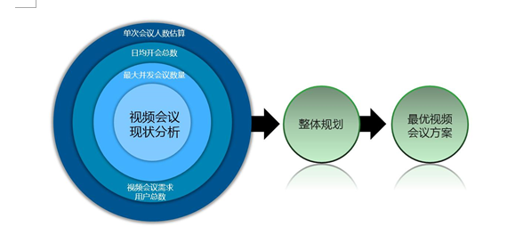
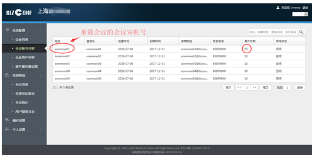
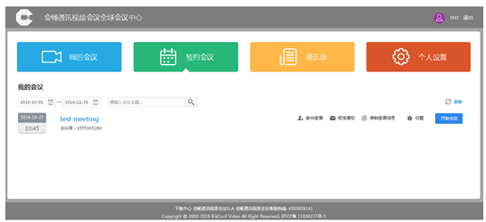
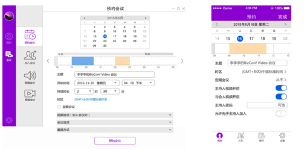
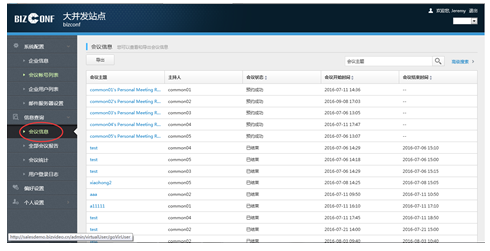

云视频会议应用广泛，会畅通讯全员部署解决方案价值凸显
-
 媒体报道
媒体报道
- 2017-08-09
媒体报道
由于企业经营环境日渐开放化和复杂化，语音电话会议以及传统的视频会议在高效协同方面远不及云技术加持的云视频会议。传统视频会议在面对企业全新的沟通诉求时，自建、单一的、点对点的通讯模式显得老态龙钟。如今，采用云部署模式的视频会议，其简单、易用、灵活、时效、体验好、费用低等优势，迅速成为了企业视频会议的新主力军。
会议频繁量大，全员部署成本过高
会议频繁的行业多集中在知识密集型行业，如高科技、医疗、金融等行业，这些业界企业内部视频沟通会议频繁，靠硬件支撑的传统会议在这个时候就显露出了一系列的弊端，如企业组建的硬件视频会议室数量有限，海外分支机构无法部署设备，部门机构常出现会议冲突。而若采用全员购买账号，满足临时视频会议需求，又会造成账号利用率低，总体成本高。
缺少互操作性，难与企业自有系统互通
一般而言，企业内部信息系统间通常缺少互通性，用户往往需要记录多组账号及密码。尽管有的服务商可以通过云端技术解决视频会议设备间的互联互通问题，但往往安全问题又无法保障，更无法实现对全员账号进行统一管理。
基于上述问题，云视频会议领导者会畅通讯提出了基于云视频会议平台的全员部署解决方案，它同样是基于云视频的通讯方式，但在布局上，它高度整合了企业所有通讯工具和终端设备，方便快捷地为异地多方提供沟通服务。其作用完美适用于现今企业常遇到的远程招聘、高层会议、全球大会等多元化应用场景。
1.优化会议方案
BizConf Video将结合企业单次会议人数、日均开会总数、最大并发会议数及视频会议需求用户总数等多方数据，快速制定最优化视频会议方案。
视频会议现状分析
2.视频会议管理
通过实现账号管理，以预约的形式避免使用冲突，实现帐号多人多频次重复使用。与此同时，系统管理员在会议申请通过前，可以权衡会议次数和时间，限制可创建的企业账号个数，查看会议室状态。
使用客户可自主创建及删除企业账号，不再通过多方复杂冗长的申请、审核、注销环节，大大降低整体管理成本。
针对传统视频会议账号缺少互操作性，难以与企业自有系统互通的通病，会畅提供了标准的API、SDK，可以将会议系统与客户原有的OA、CRM等第三方产品无缝连接，提升沟通效率。
账号管理
会议室管理
可视化的会议预定系统
3.会后数据分析
每一次会议后，BizConf Video都会生成一份完整的数据报告，支持以电子文档或纸质方式导出会议详情（频次、数量、规模）以及用户登录日志等信息。
这一功能有助于企业更好地了解内部不同部门、不同业务的沟通需求变化，并根据部门以及人员的需求定制解决方案，最大化会议资源，最小化会议成本。
会议分析
会畅通讯全员部署解决方案为企业省去了日常繁琐的账号申请、注销及维护工作，避免了因账号资源不足导致无法满足企业随时随地沟通的问题，并采用按需付费，减少了账号闲置和利用率低的情况。
在实践过程中，会畅通讯全员部署解决方案也为不少跨国沟通频繁的在华企业提供了优质服务。一家外资生物制药公司，其业务仅国内就遍布250多个城市，目前中国在职员工10，000多名，属于典型的扩张阶段知识密集型企业。
在发展过程中，该企业一直面临巨额的会议开销和庞大的时间消耗。其硬件视频会议室仅分布在上海、北京、南京、杭州等19个城市，完全无法跟上业务覆盖区域，各分支机构经常出现会议冲突、时间浪费、跨部门与跨国交流机制混乱的问题。